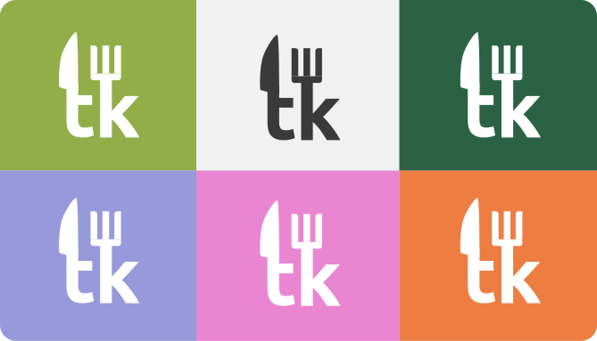
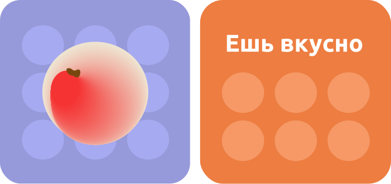
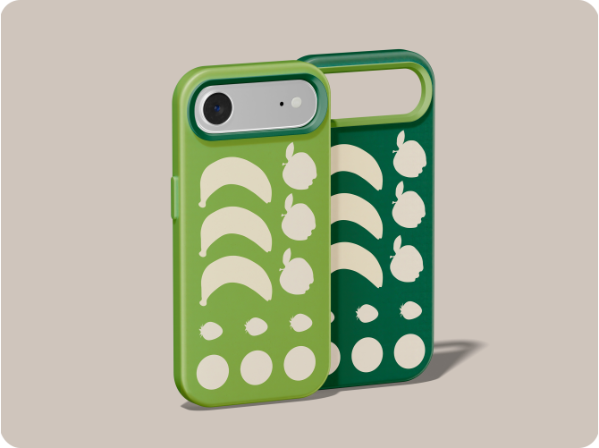

О бренде
Tarelka — это медиа-сервис, посвящённый нутрициологии. Он включает статьи, карточки и тесты, которые рассказывают, как питаться правильно, без стресса и голодовок, с лёгкостью и удовольствием!
Миссия
Помочь людям питаться осознанно и без стресса понимать своё тело, получать удовольствие от еды и строить здоровые привычки без чувства вины и крайностей.
Ценности
- Осознанность
- Спокойствие
- Забота
- Простота
- Уважение к своему телу
Метафора
В основе метафоры лежит идея воссоздания ощущения телесной и эмоциональной лёгкости, которое возникает при гармоничном отношении к еде. Это передаёт ключевой посыл медиа: здоровое питание — это не диета и не ограничение, а лёгкая, увлекательная игра с форматами, цветами и вкусами, где нет места чувству вины, но есть место лёгкости на тарелке, в теле и мыслях.
Логотип
Шрифт Ubuntu Bold
Буквы «L» и «K» в виде ножа и вилки

Пример использования полной версии логотипа

Знак
Краткая версия логотипа применяется в айдентике как альтернатива основному логотипу. Она может использоваться самостоятельно, когда нет места для полного логотипа или по эстетическим причинам.

Пример использования короткой версии логотипа
Цветовые сочетания
#FFFFFF или #3A3A3A, в зависимости от цвета фона, на котором находится логотип. Может располагаться на поверхности любого фирменного цвета. Нельзя использовать градиенты, не вращать.

Пример использования полной версии логотипа

Пример использования короткой версии логотипа
Цвета
Основные цвета
Эти цвета формируют основу визуального языка.

Вторичные цвета
Она используется в иллюстрациях, также может использоваться для выделения ключевых элементов, интерактивных компонентов и визуальных метафор.

Базовые цвета

Дополнительные цвета
Дополнительные цвета используются исключительно для создания паттерна с кругами-тарелками.


Пример использования палитры
* Instagram признана
экстремистской организацией и запрещена на территории РФ
Типографика
Основные шрифты
Ubuntu
Nunito
Скачать шрифты можно здесь.
Заголовки
Используйте Ubuntu Bold и Ubuntu Medium для заголовков.

Наборный текст
Используйте Nunito для наборного текста.

Кнопки
Используйте Ubuntu Medium либо Bold для текста внутри кнопок.

Графика
Основу графического языка составляют два взаимодополняющих элемента: абстрактные круги-тарелки и иллюстрации фруктов.

Пример использования графики
Круги
Круги используются как фоновые элементы, создавая мягкий, дышащий ритм и ощущение пространства. Круги могут быть разного размера, но их цвет должен быть из дополнительной палитры бренда и оставаться приглушённым, не конкурируя с основным контентом.

Пример использования кругов
Иллюстрации фруктов
Фрукты представлены в двух стилистических вариантах, которые используются в зависимости от контекста и нужного визуального воздействия.

Пример использования фруктов
Паттерны
Силуэты работают как деликатные акценты, значки или паттерны. Они не должны быть слишком насыщенными и всегда сочетаться с основными цветами бренда.


Примеры паттерна

Пример использования паттерна
Фотография
Фотографии являются носителем атмосферы бренда Tarelka. Они должны визуально передавать те же ощущения, что и весь дизайн: свежесть, натуральность, лёгкость и осознанную радость от еды.